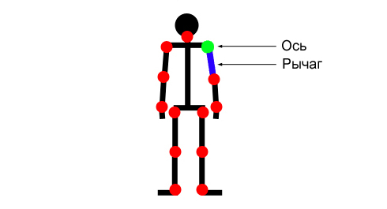
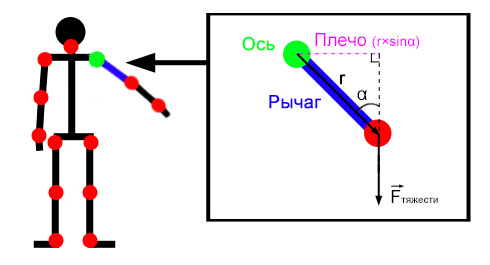
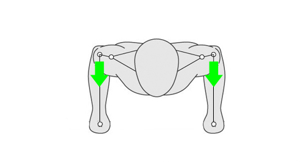
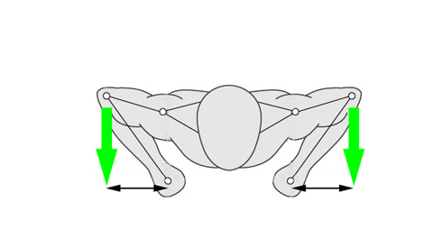

Почему одни движения или упражнения выполнять легче, другие тяжелее, а на третьи вообще не хватает сил? Потому что если заглянуть внутрь всех упражнений, то можно обнаружить любопытную вещь — они все строятся на принципах ньютоновской механики! Мы не знаем, как у вас в школе обстояли дела с физикой и насколько вам нравился этот предмет, но после сегодняшнего поста ваше отношение к ней определенно изменится.
Начнем с рассмотрения схематичного изображения человека на котором красным обозначим основные суставы. Каждый из них окружен мышцами, которые за счет своей способности сокращаться и распрямляться позволяют двигать, а точнее, вращать, кости в суставе. При этом каждая мышца может осуществлять движение строго в одной плоскости, а всё то многообразие двигательных форм, которое нам доступно, складывается из комбинаций напряжения и расслабления различных мышц в различных суставах:

Рассматривая каждый сустав, мы должны определить для него ось вращения и удаленную на расстояние длины рычага точку, к которой прикладывается сила, которая оказывает сопротивление движению. При рассмотрении упражнений с собственным весом, такой силой обычно будет являться сила тяжести или сила реакции опоры.

Звучит несколько сложно, но если рассмотреть на конкретном примере, то станет намного понятнее. Вернемся к нашему человечку и предложим ему поднять левую руку вверх. При этом давайте смотреть на то, что будет происходить в плечевом суставе. Осью вращения будет плечо, рычагом – плечевая кость (от плечевого до локтевого сустава), а нагрузка будет создаваться весом руки, на которую действует сила тяжести.
Величина, которая позволит описать вращательное действие силы тяжести, приложенной к массе на конце рычага, на плечевой сустав, называется моментом силы и равняется произведению самой силы (в нашем случае Fтяжести) на кратчайшее расстояние (плечо силы) от оси вращения до линии, вдоль которой проходит сила.

Таким образом, момент силы описывает вращательное действие силы на сустав. Оно тем больше, чем больше длина рычага и сила. Теперь, когда мы понимаем, как действует сила, создающая сопротивление движению, давайте рассмотрим, как работают мышцы. Для того, чтобы уравновесить действие внешней силы на рычаг, мышца должна также развить определенную силу, которая позволит уравнять моменты обоих сил.
Анатомия человека такова, что мышцы в основном прикреплены очень близко к суставу, за вращение которого они отвечают. Благодаря этому плечо силы, развиваемое мышцей, часто оказывается гораздо меньше, чем плечо внешней силы. Соответственно, чтобы уравновесить момент внешний силы на оси сустава, мышца должна развить силу, большую внешней во столько раз, во сколько больше плечо внешней силы. Это объясняет, например, почему людям более высокого роста и с более длинными конечностями сложнее выполнять различные упражнения.
Понимание этих двух моментов дает нам ответ на вопрос, почему одни упражнения нагружают конкретные группы мышц лучше, а другие — хуже. Дело в том, что первые используют плечо силы для увеличения нагрузки. Давайте рассмотрим этот эффект на примере сравнения обычных отжиманий от пола и алмазных отжиманий от пола.

Сила тяжести проходит через локтевой сустав а, значит, плечо этой силы равно нулю. Соответственно, и вращательный момент тоже равен нулю. Поэтому трицепс недополучает нагрузку, поскольку это мышца-разгибатель предплечья, а в данном случае нет внешнего усилия, которое предплечье бы сгибало. Локтевой сустав сгибается сам по мере того, как отводится плечо в плечевом суставе и сам же разгибается при приведении плеча в плечевом суставе.
Конечно, трицепс в некоторой степени напрягается, обеспечивая равновесие и правильную траекторию движения снаряда (как и многие другие мышцы). Однако такая нагрузка несопоставима с той, которая появляется при необходимости преодолеть действительно значительное внешнее усилие.
Можно ли изменить технику отжиманий таким образом, чтобы увеличить нагрузку на трицепс? Конечно, поскольку теперь мы знаем о том, что нужно создать вращательный момент, направленный на сгибание в локтевом суставе. Тогда трицепс включится в работу, противодействуя такому усилию. Для достижения этого эффекта необходимо сделать так, чтобы у силы тяжести появилось плечо относительно локтевого сустава. Этого можно добиться, например, поставив руки ближе друг к другу (или вообще, вплотную друг к другу, как при выполнении алмазных отжиманий).

Казалось бы, мы только немного изменили положение рук, но при этом мы смогли значительно увеличить нагрузку на трицепс и сделать упражнение более целевым! И таких моментов огромное количество! Поэтому, чтобы тренировки были эффективными, нужно всегда думать о том, что, как выжать максимум из каждого повторения в каждом подходе!